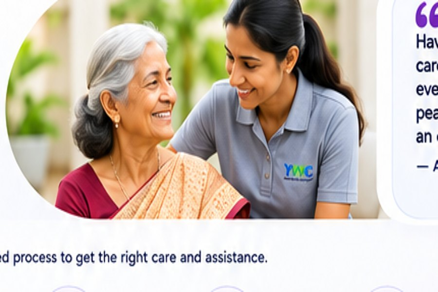

Comprehensive Care Coordination for You and Your Loved Ones
Your Well-being. Our Priority.
From hospital visits to home care, elder care, recovery support and travel companionship — we coordinate trusted assistance when you need it.
Because caring for your loved ones should never feel like a challenge you have to face alone.
Our Services
Explore our range of care coordination services designed for individuals and families.
Hospital Assistance
Hospital visits, doctor appointments, admissions and discharge coordination.
Explore service →Home Care Assistance
Caregiver support, home nursing coordination and everyday assistance.
Explore service →Elder Care Assistance
Support for elderly parents with appointments, errands and companionship.
Explore service →Pre- & Post-Operative Care
Care arrangements before surgery and practical recovery support afterward.
Explore service →Travel Companion
Companionship and practical assistance for agreed journeys.
Explore service →Healthcare Concierge
A single point of coordination for healthcare appointments and follow-ups.
Explore service →Why Choose Yes We Care?
One point of contact for your practical care coordination needs.
- Personalised care coordination
- Trusted and verified support network
- Compassionate, family-focused approach
- End-to-end assistance at every step

Having someone who truly cares and coordinates everything gave us much-needed peace of mind.
How It Works
A simple and structured process to get the right care and assistance.
1. Contact Us
Tell us about your care, hospital, home or travel requirements.
2. Share Your Needs
Explain the location, preferred schedule and the assistance you need.
3. Explore Options
We discuss suitable services, availability and applicable charges.
4. Confirm Service
Agree the service scope, timing, arrangements and charges.
5. Receive Assistance
The agreed assistance is coordinated, with updates as appropriate.
6. Follow-Up & Closure
Where applicable, coordinate any additional visits or care requirements.
Corporate Care & Employee Support
Workplace support programs to help employees care for their loved ones while they stay productive and confident.
Volunteer matching is managed manually during the initial phase.
Know More →- ♧Elder care support for employees
- ▣Employee support initiatives
- ♧Care coordination during medical leave
- ♡Wellbeing and awareness programs
Need Assistance for Yourself or a Loved One?
Talk to our team and let us help you find the right care and support.